To make some basic robots, you first need some tools. Almost all the tools you’ll use in the creation of your friendly little bots are basic hand tools. In fact, you’ll be using only a very limited number of power tools, but more on that in a bit.
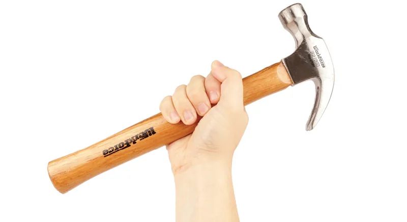
You probably already have most of the tools you’ll need lying around the house, and I am going to assume you already understand the basic operating principle of something like a hammer or screwdriver.
For those of you who have never used a power drill before, I’ll go over it briefly. If you’ve already got that down, skim through this section and perhaps discover some new and useful tips, or feel free to skip ahead to the sections on fasteners and materials.
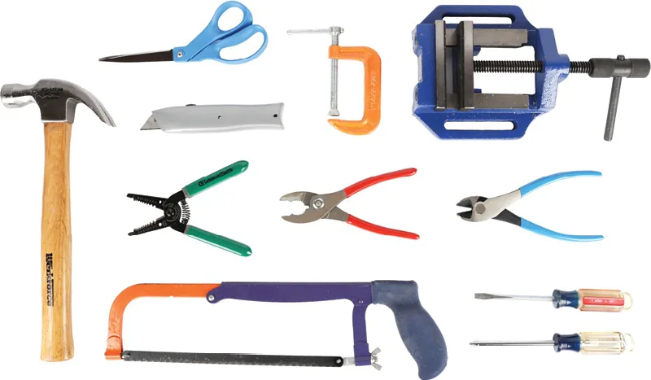
Your toolbox should contain the following tools:
Tools and Supplies
- A hammer
- Screwdrivers (Phillips and slotted)
- Pliers
- Cutting pliers
- Wire stripper
- Scissors
- A box cutter
- A hacksaw
- C-clamps
- A bench vise
Drills and Drill Bits
The primary power tool you’ll be using in this book is a power drill. It does not matter whether yours is battery powered or corded; however, I prefer to use a corded drill because it’s cheaper and won’t run out of power while I’m working.
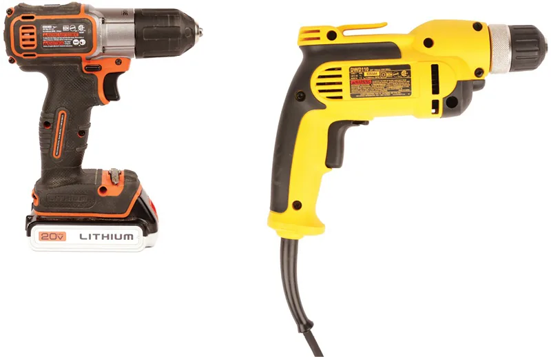
In addition to the drill, you’ll need some general-purpose split point drill bits. These are what the drill spins to cut holes in objects. The drill will always make a hole that’s the same width as the drill bit you are using, so try to find a drill bit set that includes a variety of sizes. Buying a set is an easy and economical way to make sure you are able to drill a wide variety of holes. Sets that you find at the hardware store typically range in size from 1/16 inch up to 1/2 inch in diameter.
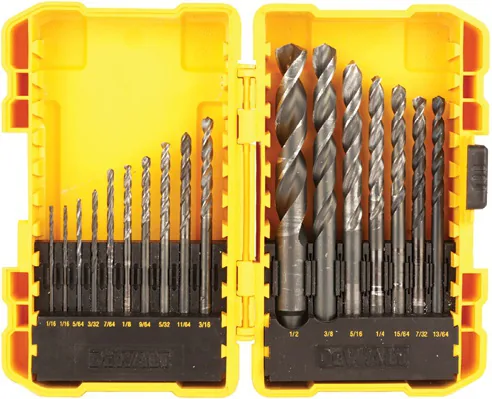
You’ll also be using spade bits in this book. This type of drill bit consists of a center point and outside cutting edges called spurs. The center point makes a small hole in the middle of what you are drilling. This keeps the spade in place as the spurs cut a much larger outer hole. This type of drill bit is used to cut holes wider than 1/2 inch. The spade bit size you’ll use most is 3/4 inch.
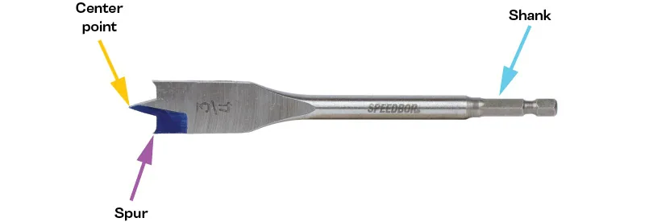
To get started, locate the rotating assembly at the front of the drill where you insert the drill bit. This is called the chuck, and it has jaws inside that open and close to grab onto the drill bit.
To open the jaws of the chuck, twist it counterclockwise until the jaws are slightly wider than the drill bit. Insert a drill bit into the chuck so there’s some space between the end of the chuck and the drill bit’s spiral cutting flutes. Twist the chuck clockwise until its jaws clamp down on the shank of the drill bit.
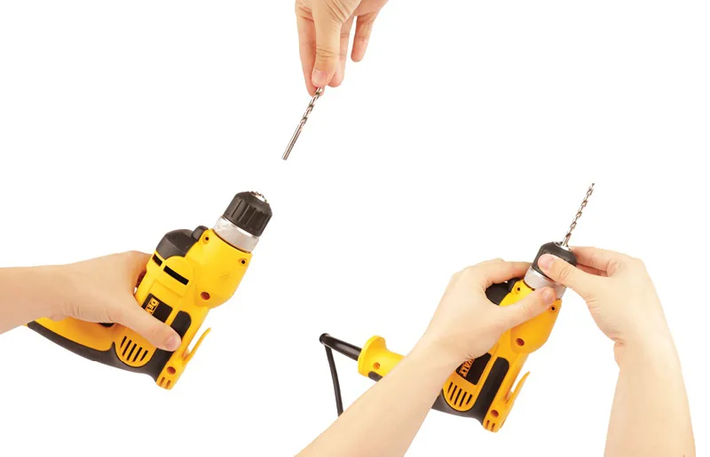
When the drill is in use, the drill bit should not wobble while spinning. In other words, the drill bit should spin entirely on-center. If it appears to be mounted off-center, remove the drill bit and go through the process of inserting it again.
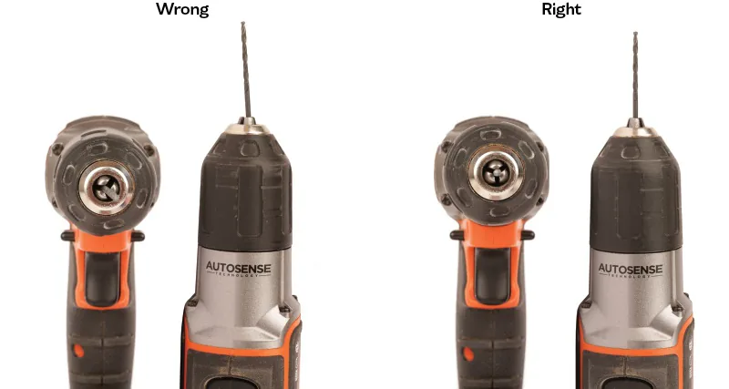
Nearly all modern drills allow you to control the drill bit’s speed and rotation direction. You usually change rotation direction (clockwise or counterclockwise) with a switch found near the drill’s trigger button, and how hard you press the trigger button determines the speed. The harder you press, the faster the drill bit spins.
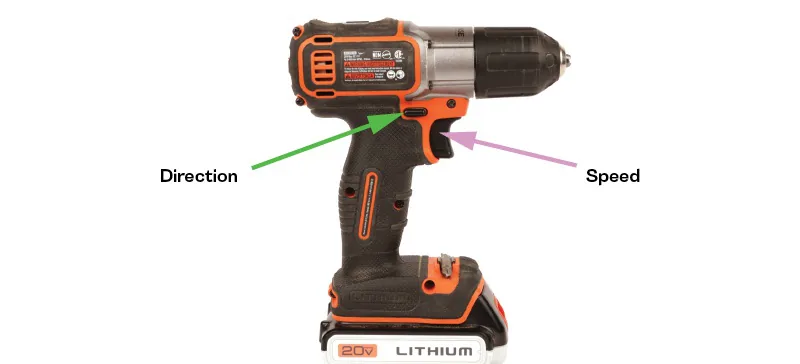
Before using any drill, first clamp down the object you want to drill with your bench vise or C-clamps.
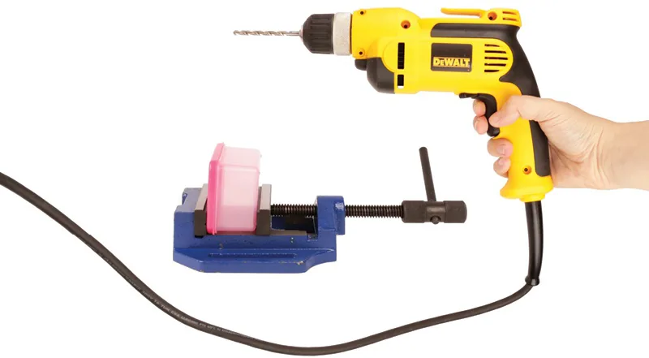
Place the point of the drill bit perpendicular to the surface you want to drill through, and slowly bring the drill bit up to speed. Gently press down on the drill until you are all the way through the surface.
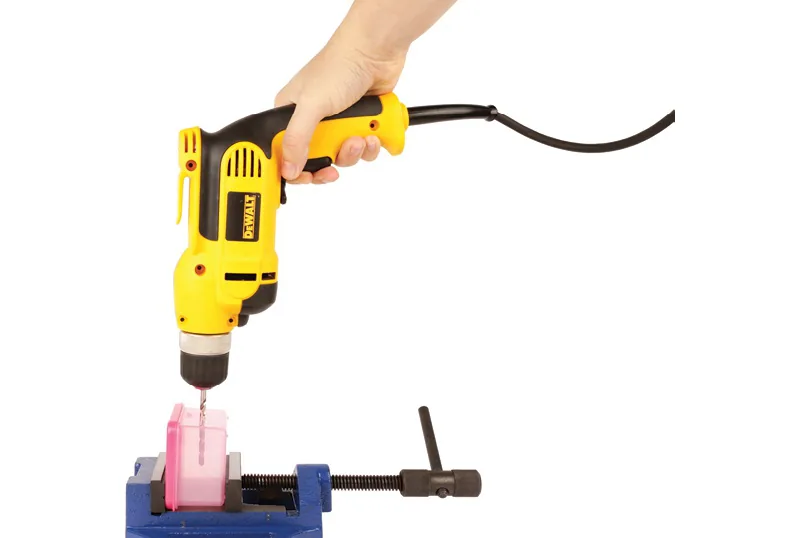
Fasteners and Adhesives
Once you’ve drilled a bunch of holes through objects, you can attach them together with fasteners. You’ll mainly encounter two types of mechanical fasteners when building robots: zip ties and nuts and bolts.
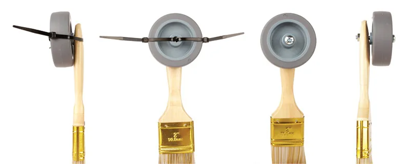
You’ll use zip ties in basically every project in this book. Zip ties are easy to use to attach things together, and they’re easy to undo if you make a mistake. They’re strong, they don’t easily break or snap, and they’re also cheap and readily available—all great attributes for building simple robots.
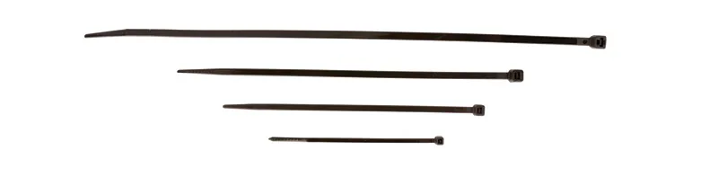
To use a zip tie, simply stick the “tail” end into the little “mouth” end and pull it tight. You’ll hear the plastic make a “zip” noise as it’s pulled through. Notice how once it has been tightened, it cannot be loosened. This is both a benefit and a curse. If you mess up, the only way to undo the zip tie is with cutting pliers or scissors.
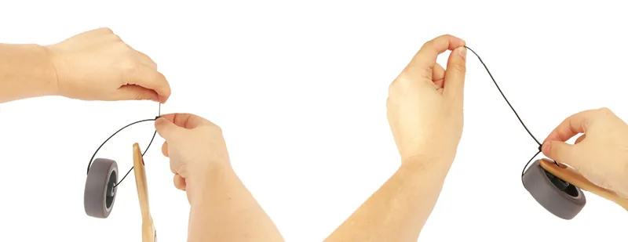
In addition to zip ties, some robots may use nuts and bolts, which are also easy to use and come in a variety of sizes. Nuts and bolts have two standards of measurement: imperial and metric. In the US, the standard is imperial, so everything is measured in inches and fractions of an inch. Metric is used in the rest of the world. This book is primarily written for a US audience, so I’ll use imperial measurements.
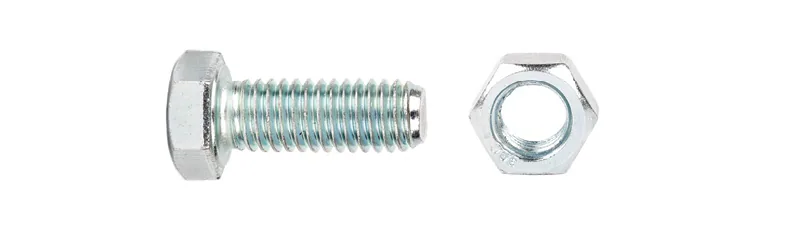
Nuts and bolts have two measurements that describe them. The first is the width of the bolt, and the second is the thread spacing. For instance, a ¼-20 bolt is 1/4 inch wide and has 20 threads per inch. A ½-13 bolt is 1/2 inch wide and has 13 threads per inch.
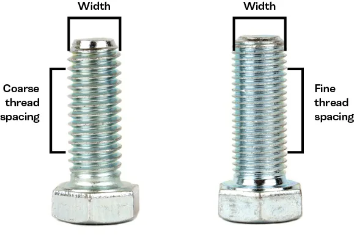
Nuts and bolts will thread together only if the width and thread count match.
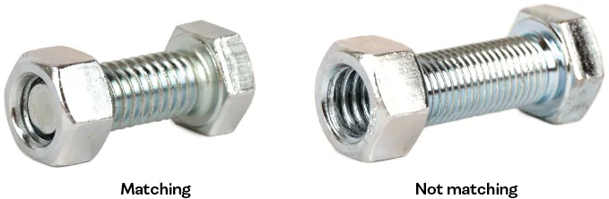
To use a nut and bolt, insert the bolt through both holes in the two objects you want to attach together. Once the bolt is passed through both objects, twist the nut clockwise to fasten the objects together.
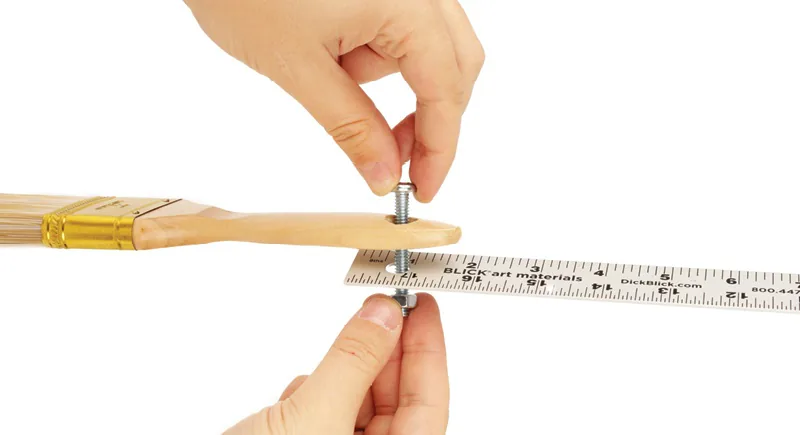
On occasion in this book, or in your own exploration, you’ll need some other specialized fastening hardware, which you should be able to find in your local hardware store. However, you might need to order something online. See the “Basic Electronics Shopping List” in Appendix A for resources.
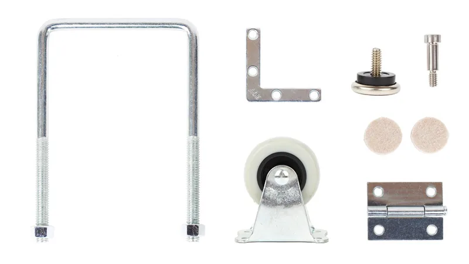
The other way to attach objects together is with an adhesive, most commonly with glue or tape. It is always preferable to use mechanical fasteners over adhesives since they’re easier to undo. That said, on a few occasions in this book you’ll attach things with adhesives—primarily when you use painter’s tape to temporarily attach paper drill templates to objects. One project (the Skitter Bot) uses glue, which I’ll cover in Chapter 10.
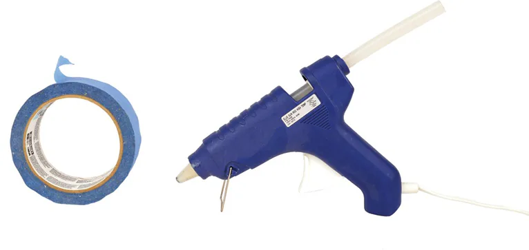
Alternative Materials
This book doesn’t require any fixed set of materials or a building kit. You can build these bots using stuff you find around the house, and you may not find the exact parts used here. I’ll describe the parts as best I can in the materials list for each bot, but you can improvise with what is available to you. For instance, if the book calls for using a plastic container as the robot body, you could potentially swap it out with a cardboard or wooden box. Also, you might replace a wheel made from a CD with a large, round bike reflector. The idea is that you observe the basic shapes and materials for the different components and simply replace them with what you have on hand. Aside from the electronics, rarely is a part so specific that it cannot be swapped out.
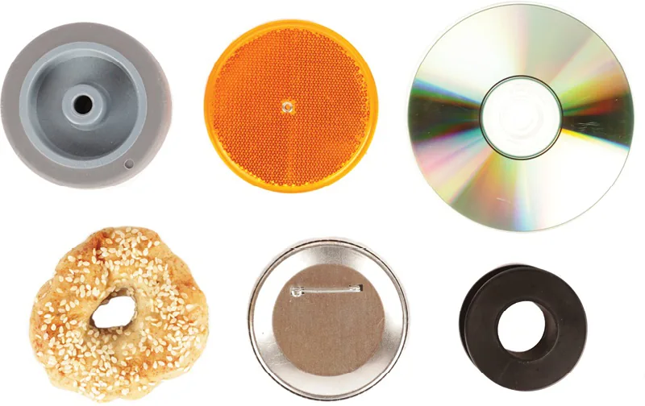
To the frustration of many serious engineers, I often like to say, “building bots isn’t an exact science.” However, this is only a half-truth. A great deal of robotics uses precise scientific principles, but this book explores the part of robotics that requires creativity, ingenuity, and experimentation. It’s intended to inspire you to play, improvise, and innovate. Think of the directions as guidelines, and feel free to change them to suit your purposes.
Once you get good at building bots, if you really want to go wild, you can even swap out the parts with unusual building materials, such as old stuffed animals or even food.